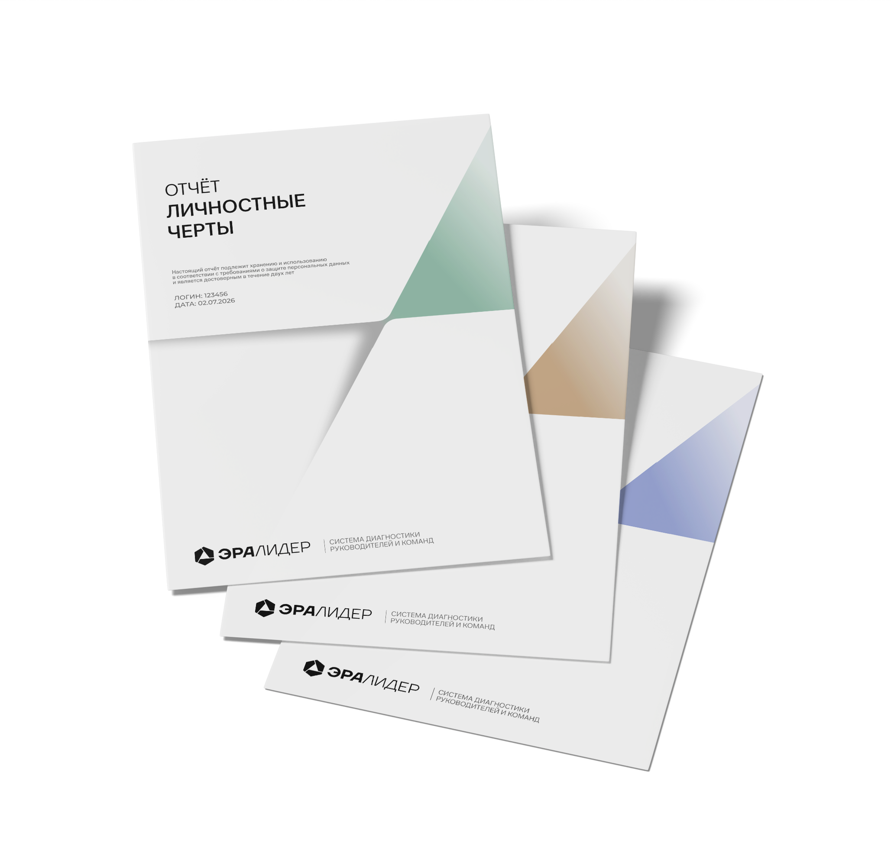

Индивидуальный полный отчёт
Полная картина по одному руководителю: личность (6 черт), стресс-поведение (11 деструкторов), мотивация (8 драйверов). Развёрнутая интерпретация до 50 страниц.
В этом отчёте
- Шкалы по 80 фасетам — детализация каждого фактора каждого блока опросника до уровня поддерживающих субшкал
- Сравнение с нормой — где находится профиль относительно руководителей в нормативной базе
- Раздел «Поведение под давлением» — прогнозы по 11 деструкторам с описанием триггеров
- Раздел «Что развивать» — конкретные бизнес-ориентированные рекомендации
